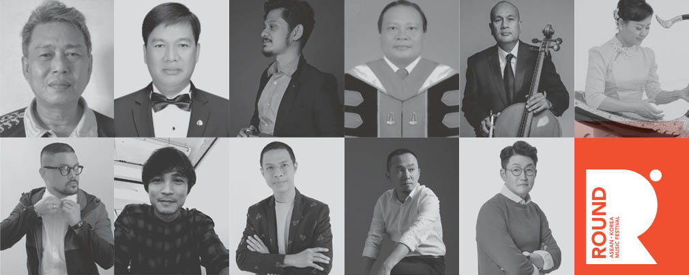

- about AKMC
- ASEAN-Korea Music Committee
ROUND has grouping the National Committee from each country, called ASEAN - Korea Music Committee(AKMC), is aiming for cultivating opportunities of cultural exchange and establishing a network on/offline with 10 ASEAN and Korean music committees.
Through this group, we desire the AKMC to be settled as the network exchanging the information, establishing a foundation in accordance with each country’s music industry current status, and recommending helpful partnership to each other.
